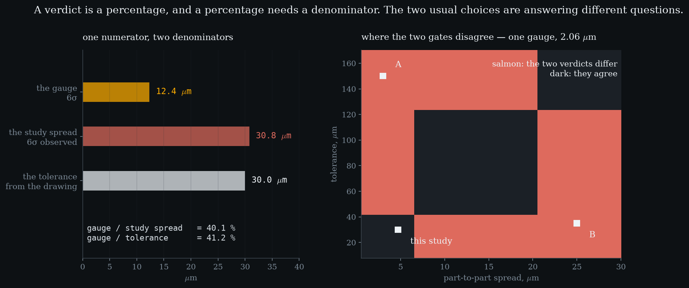
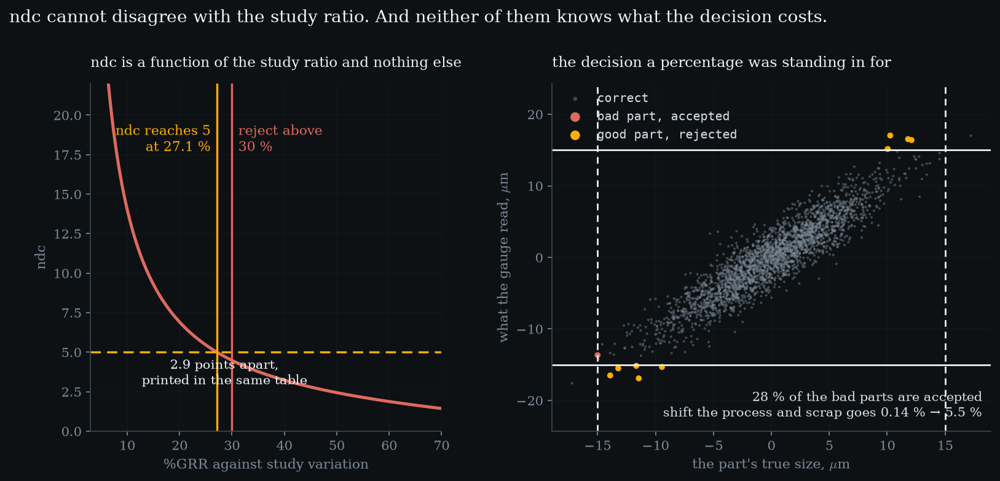

Level 4 · chapter four
%GRR, ndc, and against what
Three levels produced variances. A verdict is not a variance — it is a percentage, and a percentage needs a denominator. The two usual choices answer different questions, disagree on purpose, and the standard prints both without saying which one you are asking.
after Level 3 — Gage R&R by ANOVA·leads to Level 5 — bias, linearity, stability
- 4.1A verdict is not a variancesame numerator, two denominators, two questions
- 4.2Only one of them can see the partsimprove the process and the study ratio gets worse
- 4.3The same gauge, opposite verdictstwo factories, one instrument, both gates honest
- 4.4The third number is the first one rearranged — and its gate is 2.9 points tighter
- 4.5A percentage is a proxy for a riskshift the process and the risk moves while %GRR does not
A verdict is not a variance
Three levels of arithmetic have produced variances: a repeatability, a reproducibility, an interaction. None of them is a decision. To get a decision you divide, and the whole difficulty of this level is what you divide by.
Same numerator both times. one numerator, two denominatorsthe gauge, 6σ12.4 µmthe study spread, 6σ30.8 µmthe tolerance30 µmagainst study40.1 %against tolerance41.2 %The first asks whether this gauge can tell these parts apart. The second asks whether it can decide whether a part conforms. Those are different questions, and the standard prints both answers side by side without saying which one you asked.
Only one of them can see the parts
The tolerance came off a drawing. It does not know how much the parts vary, so the tolerance ratio cannot move when the process changes. The study ratio is almost nothing but that.
Improve the process - take the part spread from 4.7 µm down to 1.2 - and the study ratio gets worse, from 40.1 % to 86.4. tightening the processstudy ratio before40.1 %study ratio after86.4 %tolerance ratio41.2 % (unmoved)Nothing about the instrument changed. A gauge measuring parts that are nearly identical cannot sort them, and as the parts converge the ratio approaches a hundred percent.
Which is worth stating plainly, because it is the opposite of an intuition: a good process makes a gauge look bad on the study ratio. both are honestIf you are sorting parts into bins, the study ratio is the one you want. If you are stamping conform or not, it is the wrong number entirely.The gauge did not get worse. The question got harder.

The same gauge, opposite verdicts
So take this gauge - 2.06 µm, unchanged - and put it in two factories.
A. A well-controlled process on a generous drawing: parts at 3 µm, tolerance 150. factory Aagainst study56.6 % → rejectagainst tolerance8.2 % → acceptThe study ratio is 56.6 % - reject - and the tolerance ratio is 8.2 %, accept.
B. A sloppy process on a tight drawing: parts at 25 µm, tolerance 35. factory Bagainst study8.2 % → acceptagainst tolerance35.3 % → rejectExactly the reverse - 8.2 % (accept) against 35.3 % (reject).
One gauge, two rows, opposite verdicts off the same printed table - and neither row is a mistake. so whichWhichever matches the decision the gauge is there to make. That is a question about the job, and no amount of arithmetic answers it.The shaded region in the figure above is the whole set of processes and drawings where that happens, and it is not a corner case.
- against study %
- —
- against tolerance %
- —
- ndc
- —
- the two verdicts
- —
The gauge never changes. Drag the part spread down and the study ratio climbs towards a hundred percent while the tolerance ratio does not move at all — a gauge measuring identical parts cannot sort them, and has no trouble deciding conformance. Then drag the tolerance and only the second one reacts. The last tile turns when the two gates give opposite answers, which they do over a large part of this space.
The third number is the first one rearranged
Beside those two the standard prints a third: the number of distinct categories, which is supposed to say how many groups the gauge can separate.
It is not independent. two routes, one numberndc from the components3.2184ndc from the study ratio3.2184difference0 (algebraic)ndc is , and the study ratio is , so one determines the other exactly. Plot ndc against the study ratio and you get a curve, not a cloud. It cannot carry information the first number did not already have, and it cannot rank two gauges differently.

What it does add is an inconsistency. two lines, one tablereject above30 %ndc ≥ 5 means≤ 27.1 %the two gates differ by2.9 pointsRequiring ndc to reach 5 is exactly requiring the study ratio to be at or below 27.1 % - which is 2.9 points tighter than the 30 % printed beside it. A gauge can satisfy one rule and fail the other on the same study.
And the 1.41 is not a measurement. earned, not quotedA test asserts the constant is √2 to within 0.005, and another asserts the gate computed with the exact root is the more permissive of the two.It is the square root of two, rounded to two places - which itself moves the gate by 0.08 of a point. Small, and a reminder that a rounded constant sitting inside a threshold is not the same object as the number it came from.
A percentage is a proxy for a risk
None of the three numbers is the thing anyone actually cares about. A conformance decision compares a reading to a limit, so a good part can be scrapped and a bad part can be shipped - and how often depends on where the process is sitting.
On a centred process with this gauge, 28 % of the genuinely out-of-tolerance parts pass. centredof the bad parts, accepted27.5 %of all parts0.038 %of the good parts, rejected0.25 %scrap0.14 %That is not the same sentence as the headline rate of 0.038 % of all parts, and the second one is what ships.
Now move the process a quarter of the tolerance off centre and touch nothing else. shifted, same gaugescrap0.14 % → 5.5 %good parts rejected0.25 % → 3.13 %%GRRunchangedScrap goes from 0.14 % to 5.5, and good parts rejected from 0.25 to 3.13. The gauge is identical, so every percentage in this level is identical, and the risk moved by more than an order of magnitude.
So a percentage is a proxy, and it does not know where you are. the seam aheadBias, linearity and stability. A gauge can repeat beautifully and be wrong, be right in the middle and wrong at the ends, or be right only today.Which exposes the last thing these four levels have assumed without checking: that the gauge is merely noisy. Everything so far has had a mean of zero. Suppose it reads high.